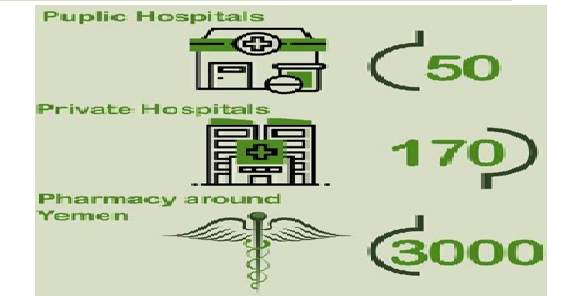

نبذة عنا
تعتبر شركة الجدرة لتجارة الادوية والمستلزمات الطبية هي شركة مملوكة للقطاع الخاص، تأسست عام 2010 على يد مالكها السيد/ابراهيم محسن الجدرة. وتعمل على تسويق وتوزيع المنتجات الصيدلانية للمستشفيات الخاصة في السوق اليمنية ، الجدرة للادوية والمستلزمات الطبية : تتعامل مع 50 مستشفى عام و 170 مستشفى خاص و 3000 صيدلية في جميع أنحاء اليمن ولدينا فريق متكامل : مؤهل في جميع مجالات التسويق والمبيعات . رجال المبيعات المؤهلين؛ المشرفون العلميون واستخدام الإعلانات عن طريق الكتيبات والصحف والندوات. كل فريق عمل منفصل عن الشركة الأخرى مع كل الموارد والدعم الذي يحتاجه لتحقيق النجاح وكل شركة لديها خطة سنوية مع الهدف وحققت جميعها معدل نمو سنوي في البيع والتسويق. ولدينا مخازن مركزية مجهزة بنظام التبريد والتبريد المركزي في جميع الفروع الأخرى للمؤسسة والمعرض. لدينا خبرة عالية وموارد كبيرة في مجال التسويق وقاعدة واسعة من العملاء (أكثر من 10000 عميل). لدينا فريق عمل يضم أكثر من 120 شخصًا وتصل مبيعاتنا إلى 25.000.000 دولار (سبعة عشر مليون دولار) سنويًا. تمتلك شركة أبو الراغب فارما 5 قاطرات نقل ثقيل تمتلك شركة أبو الراغب فارما استور لمعدات نقل وتوزيع الأدوية لأغلب محافظات الجمهورية اليمنية عدد 25 قطعة مجهزة بأحدث تقنيات التبريد والتكيف بحيث يتم نقل الأدوية إلى الأماكن النائية في جو صحي وسليم تعد شركة الجدرة للادوية والمستلزمات الطبية واحدة من الموردين الرئيسيين للأدوية إلى المنظمات الدولية والمحلية مثل: - المنظمات الدولية: منظمة ادراء ، منظمة الهجرة الدولية، منظمة التعاون الإسلامي، الهلال الأحمر القطري - المنظمات المحلية : مؤسسة بناء جمعية رعاية الأسرة نوفر منتجات عالية الجودة وخدمات احترافية وفعالة للحفاظ على مكانة رائدة في الأسواق المختارة. تطمح شركة الجدرة للادوية والمستلزمات الطبية إلى توزيع الأدوية والوصول إلى جميع محافظات ومناطق الجمهورية اليمنية وكذلك التوسع في الدول المجاورة توفير أدوية عالية الجودة وفعالة وبأسعار في متناول الجميع حتى يكون الدواء في متناول الجميع
مستشفيات عامة
مستشفيات خاصة
صيدليات في اليمن
